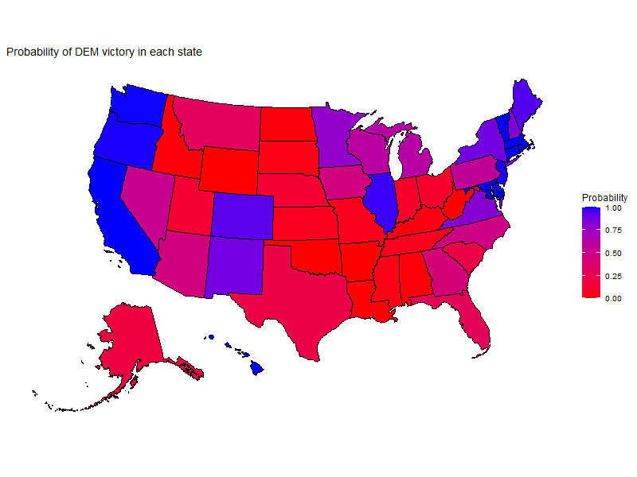
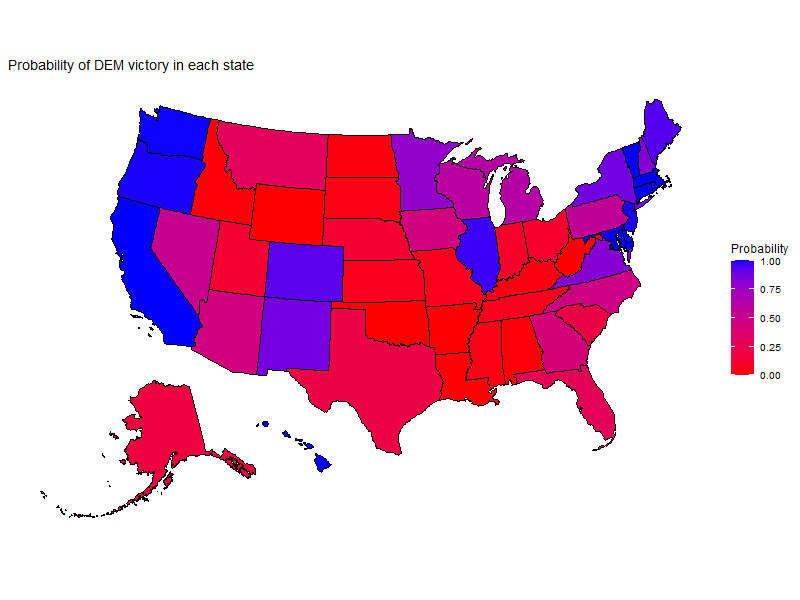
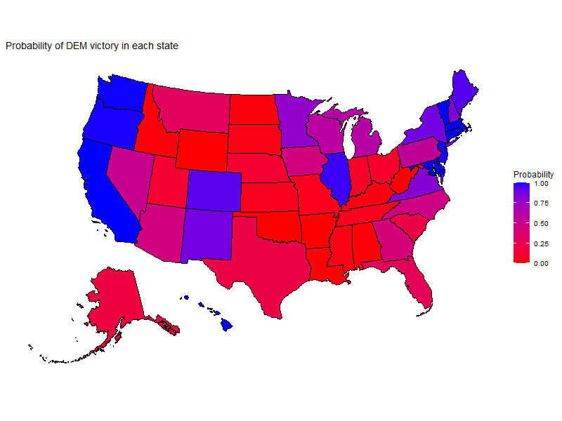

Last updated: 24.09.2024
The most powerfull man in the world is elected every 4 years. No other election in the world has such a widereaching impact on the world and naturally the election draws a lot of attention. The US system for choosing a president is strange for us Europeans. The winner is the one who wins a plurality in the correct combination of states. The winner does not need to win the greatest number of states or the most votes nationally. This adds an extra layer of challange and strategy to winning an american presidential election. Thanfully this complexity and attention makes for an excellent target for modelling. Therefore, I have developed a data driven model to simulate the outcome of the US presidential election. The model outputs a probability distribution of electoral votes and probability of winning individual states for each candidate. The model is simple yet sufficiently advanced to capture the delecate interplay between states.
The latest prediction is that Donald J. Trump has the best chance to win the presidency with a probability of 50.8%.

Our prediction model may appear straightforward at first glance. We run 10,000 simulations for each state, plus Washington, D.C. The results for each state are tallied, the corresponding electoral votes are counted, and the winner is determined. The distribution of outcomes is then presented based on how many simulations each candidate won. While this approach seems simple, there are several nuanced elements involved.
The model relies solely on polling data and does not incorporate factors like demographics, economic conditions, or other fundamental state characteristics. It does not account for polling trends or the time remaining until Election Day. The model's inputs are polling averages compiled by FiveThirtyEight. However, the current polling data for the Trump-Harris matchup is limited, so some of the input data is based on polls from the Biden-Trump matchup. Additionally, not every state has been polled yet in this cycle. For states where there is a clear favorite and minimal likelihood of flipping, we have used 2020 polling data. Since electoral votes are allocated by state plurality, we believe this approach is acceptable for states that are not "in play." It’s worth noting that more established outlets like FiveThirtyEight and The Economist are waiting for more polling data before publishing their election predictions.
A journalist recently stated, "The Harris campaign doesn't need to worry about losing Minnesota, because if they lose Minnesota, they’ve already lost the election." This reflects the idea that similar states tend to vote similarly. Our model accounts for this by correlating state simulation results. To estimate these correlations, we use polling averages from the 2020 U.S. Presidential Election as published by FiveThirtyEight. With about 250 daily data points per state, we can approximate the correlations as they were in 2020. While it's reasonable to expect correlations to shift over time due to changing demographics and different candidates, demographic changes occur slowly and should only slightly alter the electorate. As for candidate impact, there isn't yet enough data to assess how Kamala Harris's candidacy has affected state correlations.
In the early stages of model development, we considered an alternative approach using U.S. House of Representatives election results. By aggregating election data at the state level going back to 1976, we aimed to find historical correlations. However, this approach had drawbacks. Demographic and political shifts over time could skew results, and congressional races are more localized, potentially being influenced by particularly popular or unpopular candidates. Although these effects might average out at the party and state levels, the limited data set of 24 elections made estimates using this approach less accurate.
To determine the winner in each simulation, we simulate results for every state and tally the votes according to the electoral college system. However, the model does not account for states like Nebraska and Maine, which allocate their electoral votes differently. This omission should have minimal impact, as these states only contribute a small number of votes, and Nebraska and Maine tend to balance each other out.
To simulate each state, we need to have some idea of the probable vote share for each candidate. A reasonable starting point is, therefore, the polling average. However, the polling average is a statistic (average) of a point estimate (single polls). Therefore, there is some uncertainty about the true vote share among voters. We incorporate this uncertainty into our model by assuming that the "true" vote share is a random normal variable with a mean equal to the polling average and inferring the standard error from the confidence interval of the polling average. For states with insufficient up-to-date polling averages, we assume a 1% standard error instead. This is reasonable based on the standard error for more recently polled states, and these states are usually ones with a fairly certain outcome.
For each simulation, we generate a vote share for each state using a multivariate normal distribution with parameters drawn at random as previously stated. This involves drawing 51 correlated normal random variables, one for each state and D.C. We use the correlation from the 2020 polling averages but adjust the covariance so that the standard deviation aligns with a typical poll, about 5%. Although this assumption is questionable, it provides a pragmatic solution for generating correlated variables and captures some of the time uncertainty.
After running 10,000 simulations, we end up with a distribution of electoral votes and probabilities for winning individual states. The number of electoral votes for each candidate is counted and the probability of states won is presented above and state by state probabilities are shown in the table.
| Harris | Trump | |
| Alabama | 0.012 | 0.988 |
| Alaska | 0.185 | 0.815 |
| Arizona | 0.443 | 0.557 |
| Arkansas | 0.004 | 0.996 |
| California | 1 | 0 |
| Colorado | 0.926 | 0.074 |
| Connecticut | 0.999 | 0.001 |
| Delaware | 0.998 | 0.002 |
| Florida | 0.282 | 0.718 |
| Georgia | 0.427 | 0.573 |
| Hawaii | 1 | 0 |
| Idaho | 0.016 | 0.984 |
| Illinois | 0.97 | 0.03 |
| Indiana | 0.101 | 0.899 |
| Iowa | 0.443 | 0.557 |
| Kansas | 0.065 | 0.935 |
| Kentucky | 0.031 | 0.969 |
| Louisiana | 0.009 | 0.991 |
| Maine | 0.936 | 0.064 |
| Maryland | 1 | 0 |
| Massachusetts | 1 | 0 |
| Michigan | 0.622 | 0.378 |
| Minnesota | 0.781 | 0.219 |
| Mississippi | 0.032 | 0.968 |
| Missouri | 0.054 | 0.946 |
| Montana | 0.303 | 0.697 |
| Nebraska | 0.129 | 0.871 |
| Nevada | 0.529 | 0.471 |
| New Hampshire | 0.83 | 0.17 |
| New Jersey | 0.992 | 0.008 |
| New Mexico | 0.873 | 0.127 |
| New York | 0.878 | 0.122 |
| North Carolina | 0.475 | 0.525 |
| North Dakota | 0.021 | 0.979 |
| Ohio | 0.103 | 0.897 |
| Oklahoma | 0.003 | 0.997 |
| Oregon | 0.993 | 0.007 |
| Pennsylvania | 0.565 | 0.435 |
| Rhode Island | 1 | 0 |
| South Carolina | 0.205 | 0.795 |
| South Dakota | 0.036 | 0.964 |
| Tennessee | 0.054 | 0.946 |
| Texas | 0.208 | 0.792 |
| Utah | 0.125 | 0.875 |
| Vermont | 1 | 0 |
| Virginia | 0.818 | 0.182 |
| Washington | 0.997 | 0.003 |
| West Virginia | 0 | 1 |
| Wisconsin | 0.6 | 0.4 |
| Wyoming | 0 | 1 |
| District of Columbia | 1 | 0 |